Каталог игр
Минимальные и рекомендуемые системные требования PC-игр: процессор, видеокарта, ОЗУ и место на диске. Найдите игру в списке или через поиск по названию.
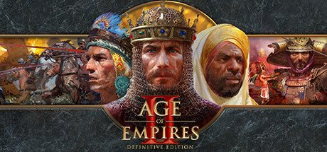
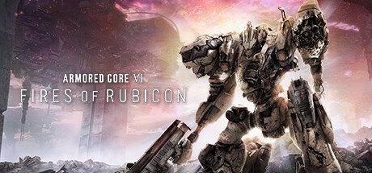
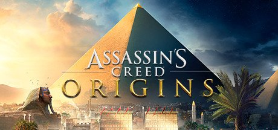
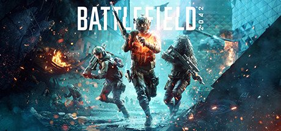
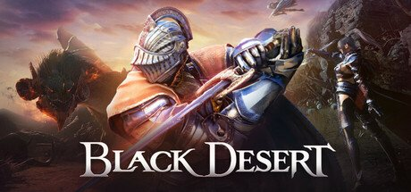
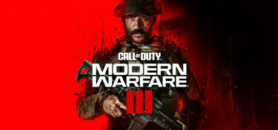
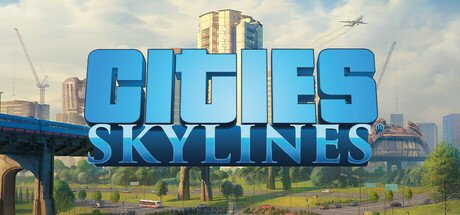
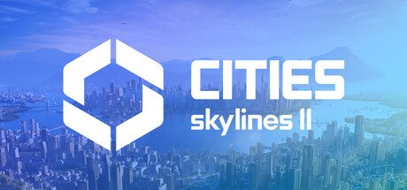
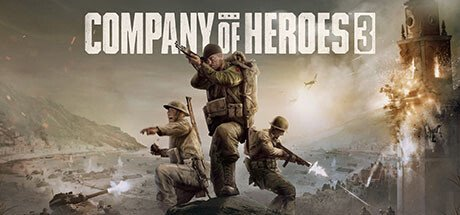
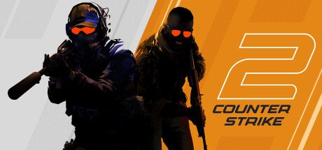
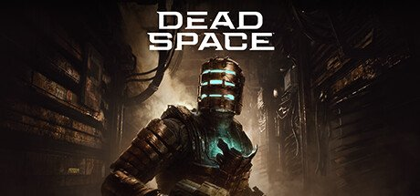
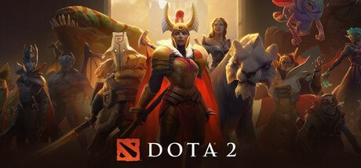
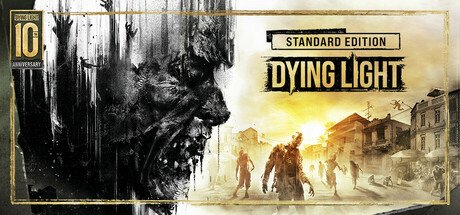
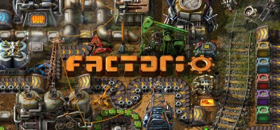
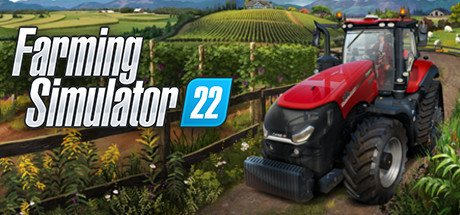
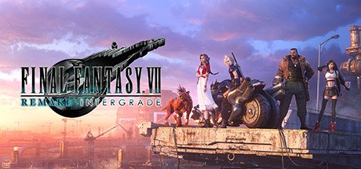
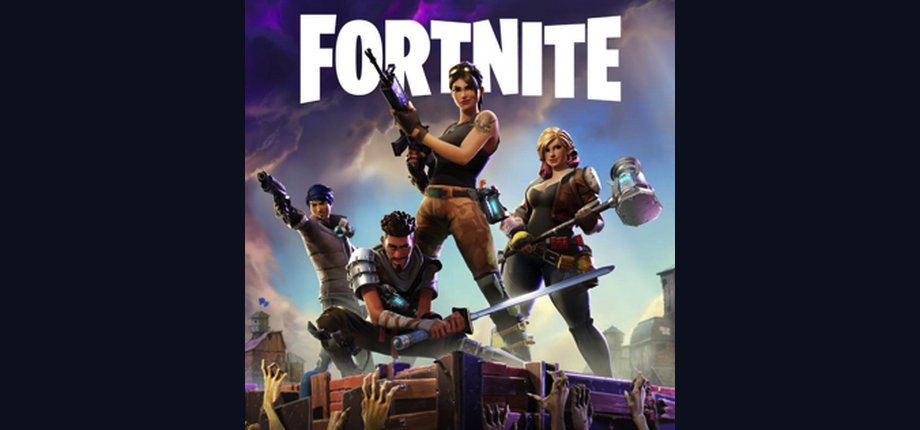
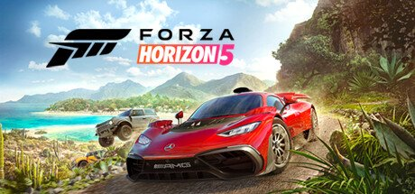
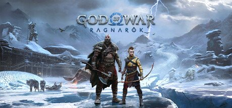
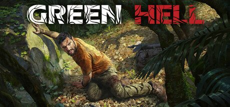
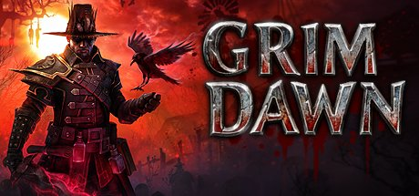

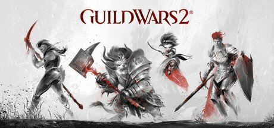
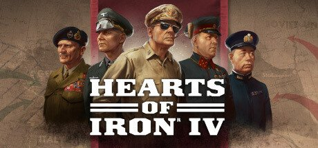
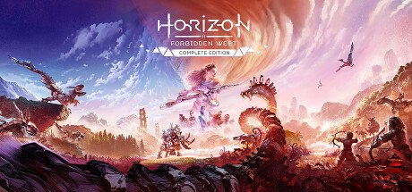
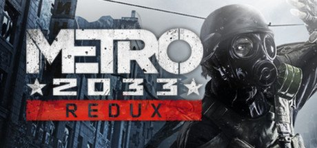
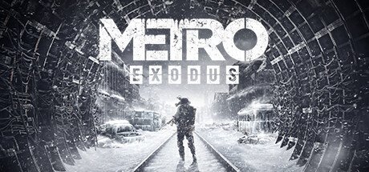
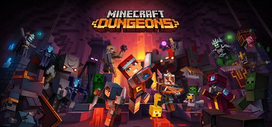
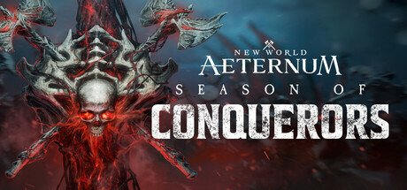
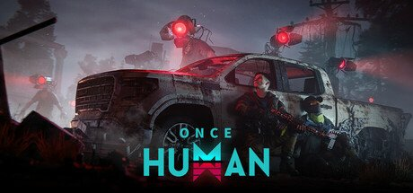
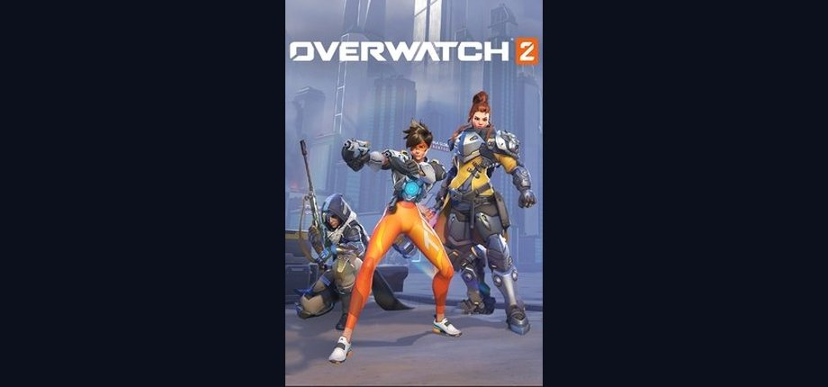
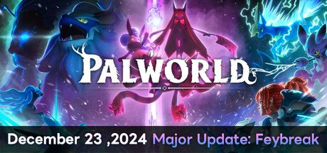
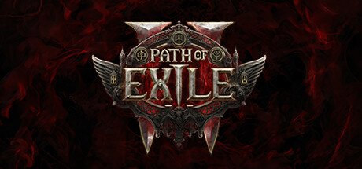
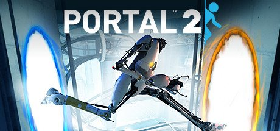
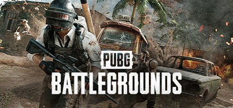
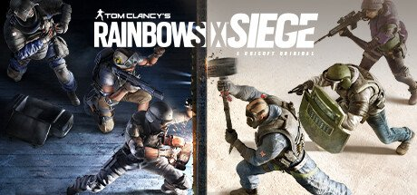
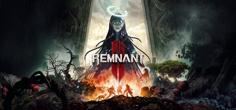
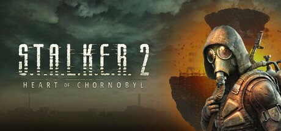
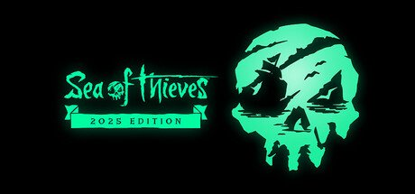
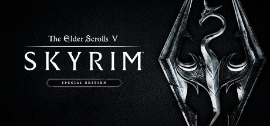
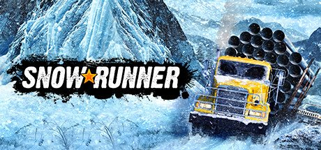
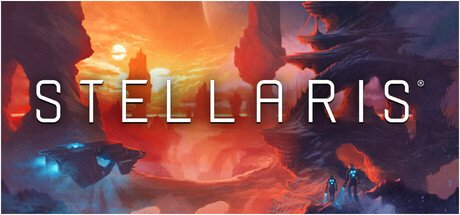
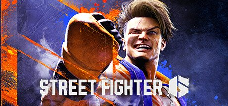
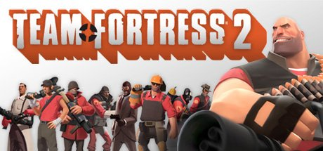
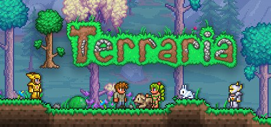
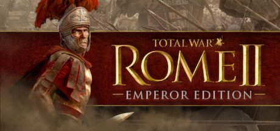
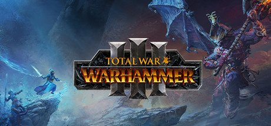
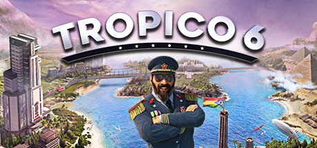
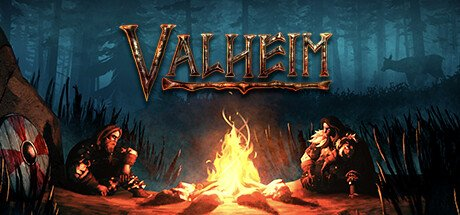
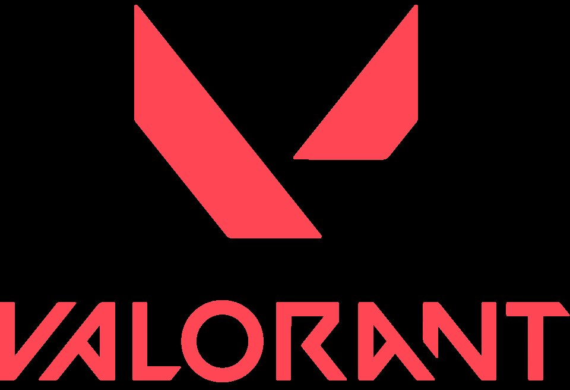
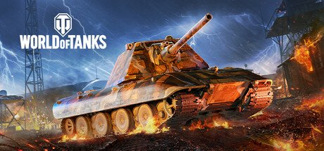